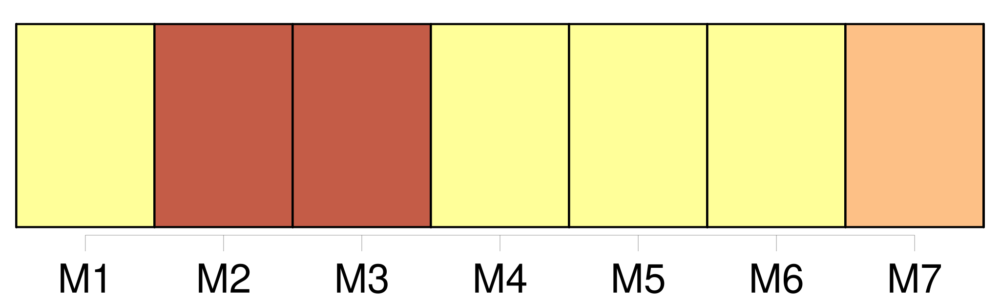
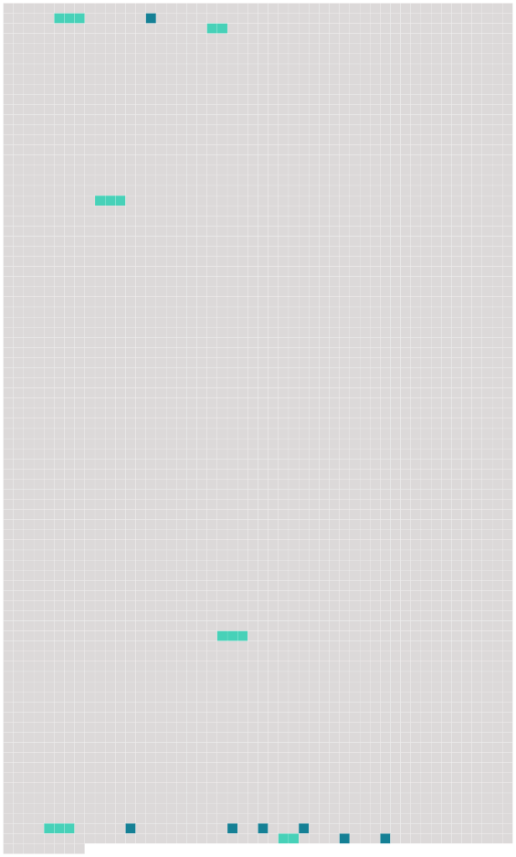

Longueur nb maillons : 13 mentions |
  |
»
» [24 phrases]
Tous connaissaient l'histoire du « Nautilus » et [du capitaine Nemo] , et au grand étonnement de Paul, lorsque Roger, sans beaucoup de préambules, proposa son plan de ville sous-marine, il ne rencontra pas l'opposition qu'il avait redoutée. [105 phrases] Certes, nous n'avons pas adopté le système [du capitaine Nemo] ; nous faisons quelques excursions à terre quand cela nous plaît, mais nous préférons la vie dans la mer, qui nous est bonne. [34 phrases] … Vous avez nommé votre ville, je le vois, d'après [le capitaine Nemo]
» [2 phrases] Nous avons donné [au capitaine] des funérailles dignes de [ses] goûts et de [ses] exploits, et nous avons utilisé le bateau pour fuir les régions dangereuses où le naufrage nous avait jetés. |
 |
La ressource peut être téléchargée sur la page Ortolang
Si vous avez des questions ou vous voyez des erreurs, merci d'envoyer un mail à silvia.federzoni89@gmail.com
Site développé par S. Federzoni (contact)